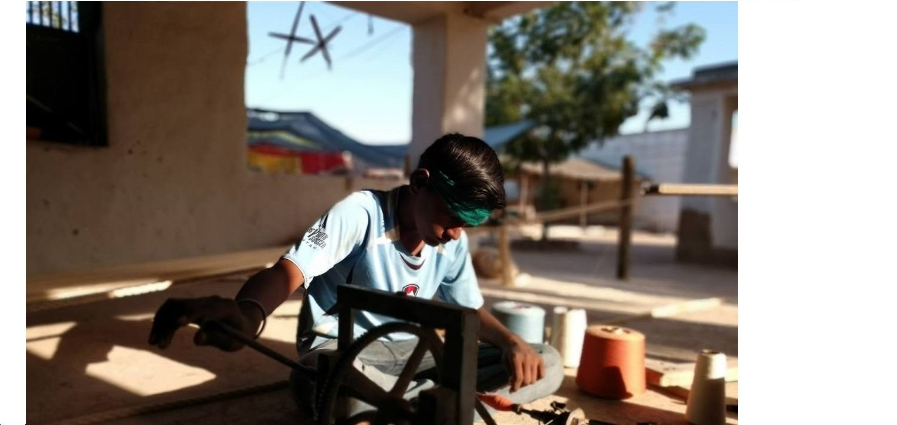
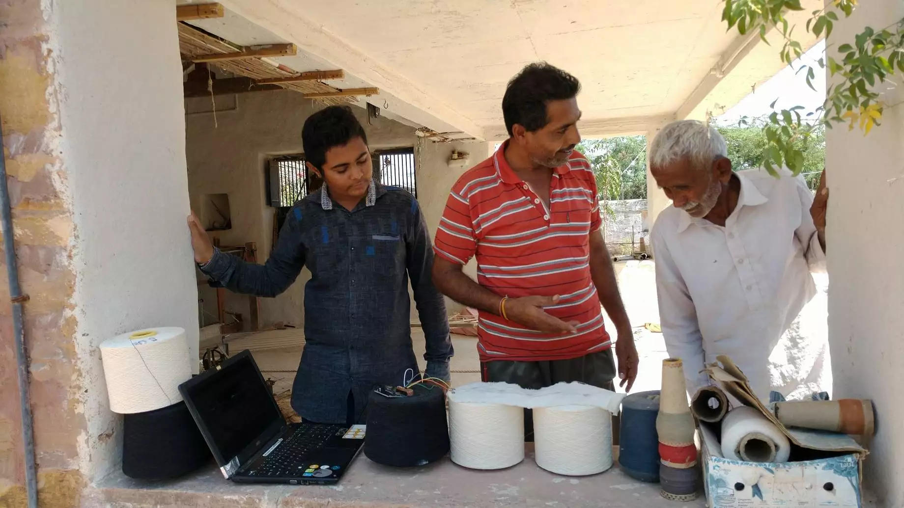

ADuring October of 2018, I was part of a team that was developing tools and techniques to develop smart textiles with the craftsmen of Bhuj, while maintaining the integrity of the craft itself. I was part of the team as a technologist, handling the design and execution of computing and electronics part. The project resulted in successful experiments along with Chhail Khalsa, Textile Designer and the initiator of the project.
The project is still work in progress and the details of the project can be found on the project website : Project Anuvad by Chhail Khalsa
The deliverables for the project from my end were :
- A circuit that allowed WiFi connectivity and could be attached to the fabric as a badge.This badge allowed the bhujodi motifs to be used as Keys of Keyboard
- An Android app to connect to the badge on fabric wirelessly and turn the touch inputs into Music
- A system to generate heat in rugs and carpets using batteries.
Experience
Working on this projevct was a beautiful experience. I spent around 2 months on an off in Bhuj. Worked closely with Chhail, who's a brilliant textile researcher an highly motivated and driven. I was able to spenbd time with craftsmen from bhuj, ram ji and many others, was invited to eat food with them and be friends with them. This project also introduced me to Jaimin who is a brilliant film maker and he taught me how to watch indian cinema :) . And yes the work iteself that we did was brilliant and I was able to successfully contribute to enrich the project.

A craftsmens son filling in the threads.

Craftsmen making fun of our work :P

On-field setup for testing the rugs
♡ ♡ ♡ ♡
© pranshu 2021